Every compartment in the cell is bounded by a membrane. Today: what a membrane is made of, why it forms by itself, why it is liquid, and how proteins sit in it. This is the base for the next lectures on transporters, pumps and ion channels.
After this lecture you can:
explain why lipids self-assemble into a bilayer (the hydrophobic effect), and name the main lipid classes;
explain lipid asymmetry, and what flippases and scramblases do;
describe how membrane proteins are attached, and predict transmembrane helices from a hydropathy plot;
explain how FRAP, cell fusion and freeze-fracture EM showed that the membrane is a fluid with proteins in it;
explain how lipid nanoparticles and liposomes use these rules to deliver drugs.
ELO 2 (membranes and transport).
The question: a barrier that flows
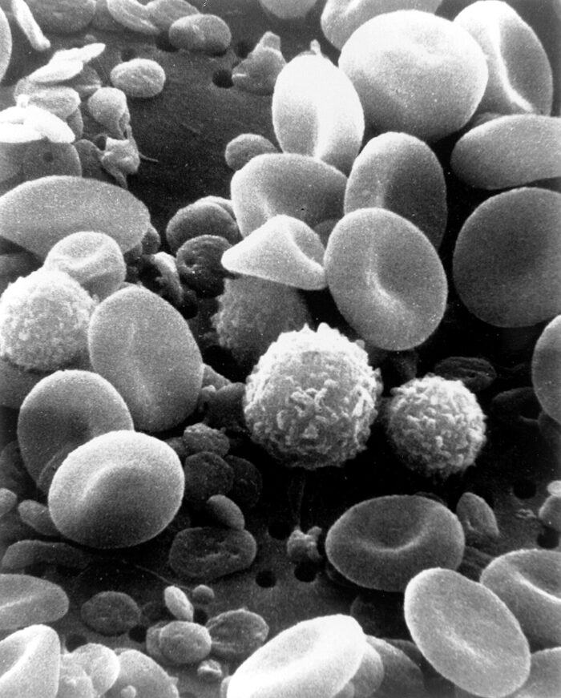
Human blood, scanning EM: red blood cells (discs), white blood cells (rough surface), platelets (small).
A red blood cell is about 8 µm wide. Many capillaries are only about 3–5 µm wide. The cell folds to squeeze through, again and again during its 120-day life.
Its plasma membrane is only about 5 nm thick: two layers of lipid molecules.
Yet it never tears open, and it keeps ions and haemoglobin inside.
How can a film two molecules thick be both a tight barrier and a liquid that flows?
Recap, and one step further: why lipids self-assemble
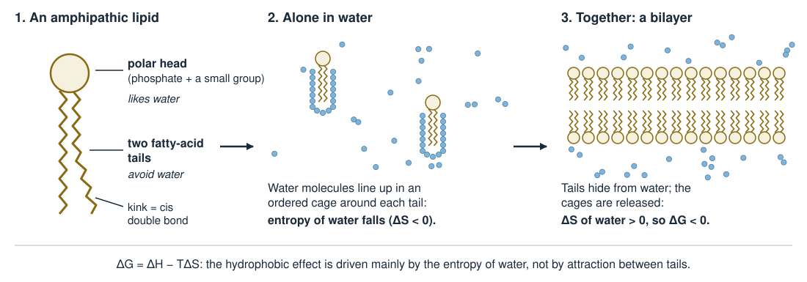
Recap: membrane lipids are amphipathic: a polar head and two hydrophobic tails. In water they form a bilayer, tails inside.
Why? A tail alone forces water molecules into an ordered cage. Tails that come together free that water: the entropy of water rises, so ΔG < 0. This is the hydrophobic effect.
A bilayer edge would expose tails to water, so a bilayer closes on itself into a sealed compartment, and a small tear reseals.
Three classes of membrane lipid
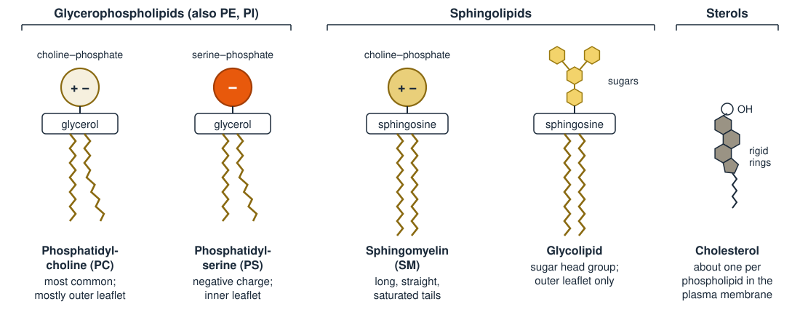
Glycerophospholipids (PC, PE, PS, PI): glycerol backbone, two fatty-acid tails. Most membrane lipid.
Sphingolipids: sphingosine backbone. Sphingomyelin; glycolipids carry sugars and face the outside.
Cholesterol: a rigid ring plate with a small OH head. In the plasma membrane, about one for every phospholipid.
A bilayer is a two-dimensional liquid
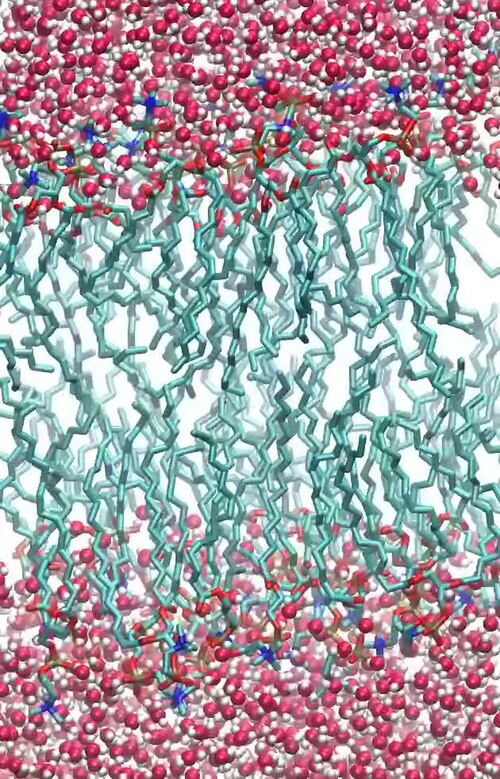
Molecular dynamics simulation of a PC bilayer. Red and white: water; cyan: lipid tails.
About 5 nm thick; the hydrophobic core is about 3 nm.
The tails are disordered and move all the time.
A lipid swaps places with its neighbour about 10⁷ times per second, so it moves about 2 µm in 1 s within its own leaflet (lateral diffusion).
It also spins about its long axis and flexes its tails.
But moving to the other leaflet (flip-flop) is very rare: about once a month for a phospholipid. The polar head would have to cross the oily core.
So: liquid in the plane, a barrier across it.
What sets membrane fluidity?
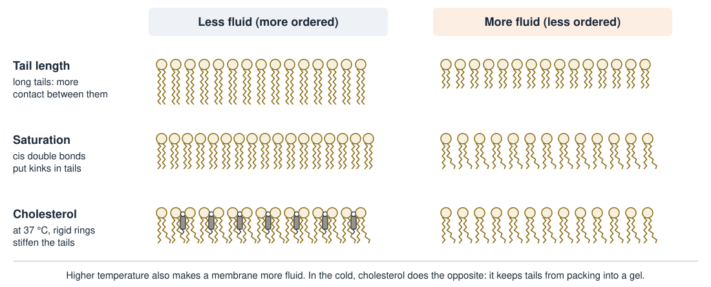
Shorter tails and cis double bonds (kinks) mean less contact between tails: more fluid.
Cholesterol stiffens the tails near the heads (less fluid, less leaky at 37 °C), but stops them freezing in the cold: a fluidity buffer.
Cells adjust their lipids to keep fluidity right: bacteria and fish grown in the cold make more unsaturated tails.
Flippases use ATP to keep PS inside. Scramblases mix the leaflets without ATP.
Exposed PS means “eat me” (dying cells, more in the cell-death lectures) and “clot here” (activated platelets).
Bending a membrane
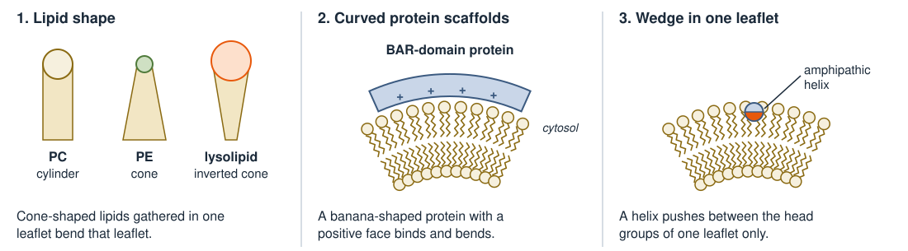
A flat bilayer is the easy shape. Vesicles, tubules and the folds of the ER and mitochondria need curvature.
Cells bend membranes with cone-shaped lipids, curved proteins and wedges; for vesicles, also with protein coats (see the vesicle traffic lectures).
How proteins sit in a membrane
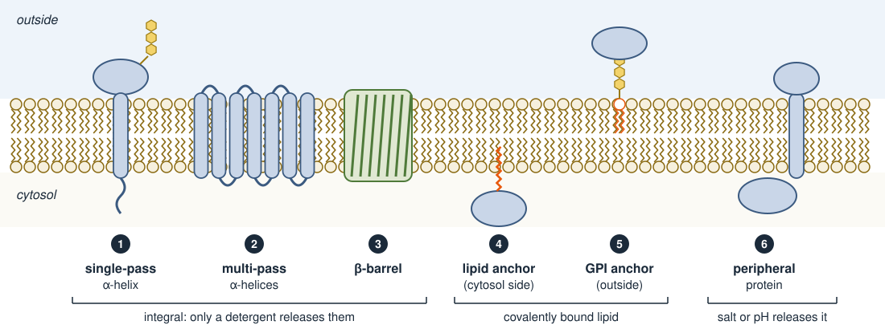
Integral: cross the bilayer once (single-pass) or many times (multi-pass), as α-helices or a β-barrel.
Lipid-anchored: a covalently attached fatty acid or prenyl group (cytosol side) or a GPI anchor (outside).
Peripheral: bound to other proteins or to head groups; washed off with salt or a change in pH.
Crossing the bilayer: α-helix or β-barrel
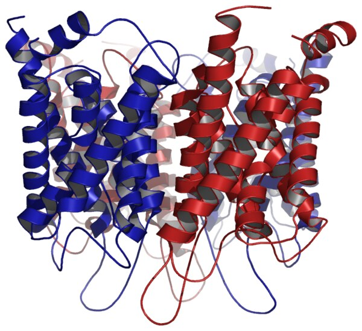
Aquaporin-1 (PDB 1J4N): bundles of α-helices. Two chains in blue and red.
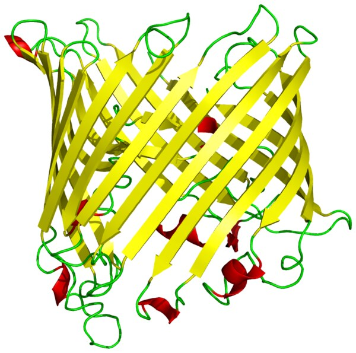
Sucrose porin from Salmonella (PDB 1A0S): an 18-strand β-barrel.
Inside the bilayer there is no water to bond with the peptide backbone (its C=O and N–H groups).
An α-helix bonds its backbone to itself. About 20 hydrophobic amino acids span the 3 nm core.
A β-barrel closes a sheet into a tube, so every strand has neighbours to bond with. Hydrophobic side chains face the lipids; the inside can be a water-filled pore.
Give each amino acid a hydropathy score (e.g. Ile +4.5, Leu +3.8, Arg −4.5). Slide a window of about 19 residues along the sequence and plot the average.
A peak of about 20 residues above the threshold predicts one transmembrane α-helix.
Prediction, not proof: β-barrels and short or partly polar helices are missed. Test with structures and topology experiments.
Getting membrane proteins out: detergents
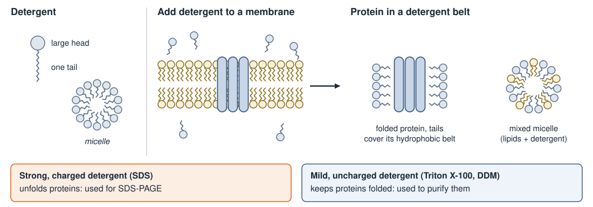
A detergent has one tail and a large head: it forms small micelles, not bilayers.
It replaces the lipids around the protein’s hydrophobic belt, so the protein becomes soluble in water.
Choose the detergent for the job: SDS to unfold and separate by size; mild detergents to purify a working protein (for activity, structure, drugs).
How do we know? Membrane proteins move
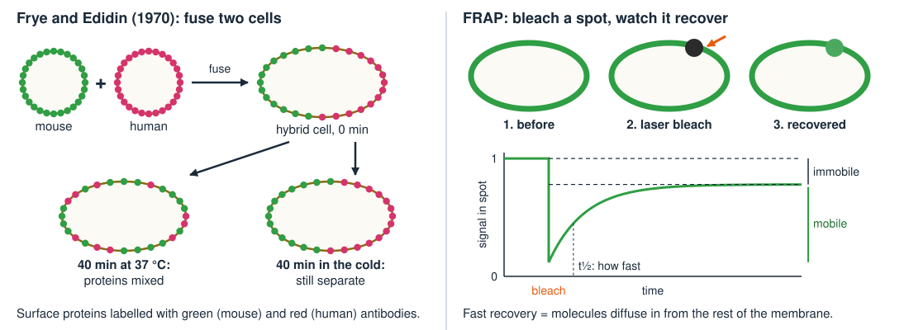
Cell fusion (1970): after fusion, mouse and human surface proteins mixed in about 40 min at 37 °C, but not in the cold. Proteins diffuse in the membrane.
FRAP: bleach the fluorescent molecules in a spot with a laser and watch others diffuse back in. The speed gives the diffusion coefficient; the part that never recovers is immobile (held by the cytoskeleton or other proteins).
How do we know? Freeze-fracture EM shows proteins inside the bilayer
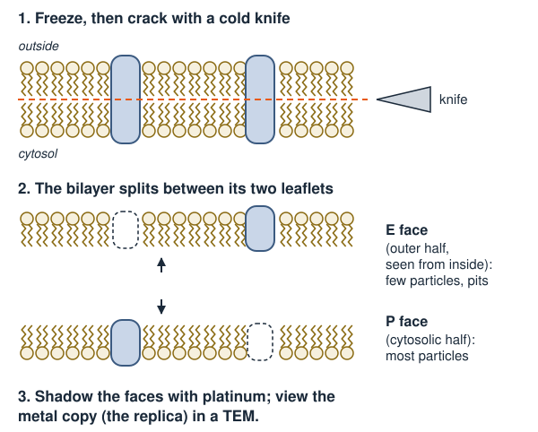
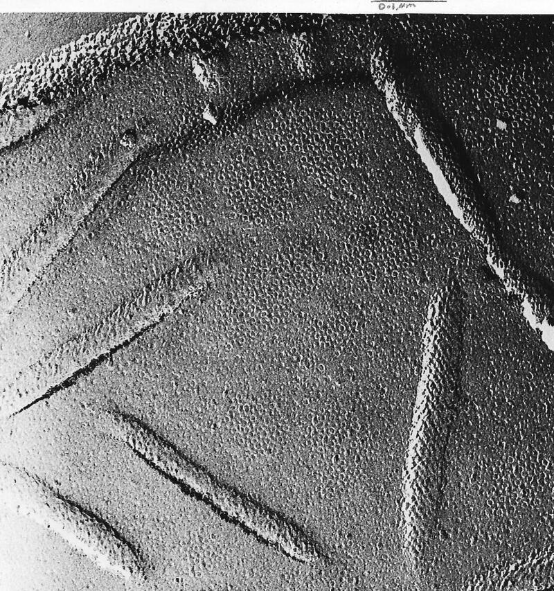
Freeze-fracture replica of the plasma membrane of baker’s yeast. Each small bump is a particle, mostly integral proteins; the long grooves are folds of the membrane. Scale bar (top) 0.1 µm.
Not a uniform sea: membrane domains
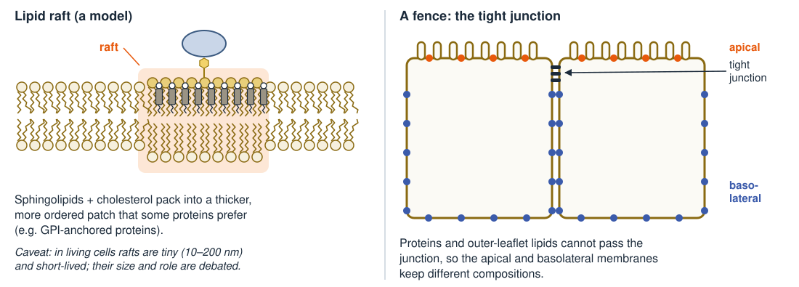
Lipid rafts: sphingolipid- and cholesterol-rich nano-domains may gather some proteins for signalling. Honest caveat: they are too small and short-lived to see directly in living cells, and early evidence (detergent-resistant membranes) was weak.
Fences: in epithelia, the tight junction keeps apical and basolateral membranes apart. The cortical cytoskeleton under the membrane also slows diffusion.
The sugar coat: glycocalyx and blood groups
Sugars on glycoproteins, glycolipids and proteoglycans form the glycocalyx, always on the outside (they are added in the ER and Golgi lumen). It protects the cell, holds water and is used in cell recognition.
ABO blood groups are the tips of sugar chains on red blood cells. One gene, three alleles: the enzyme adds GalNAc (A), galactose (B) or nothing (O).
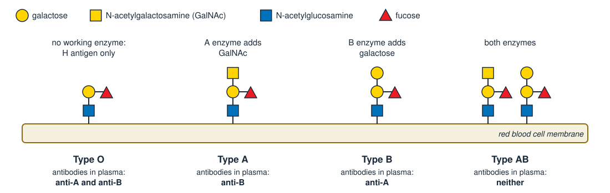
The plasma has antibodies against the sugars you lack: the wrong transfusion makes the antibodies attack the donor’s red blood cells.
Why it matters: lipid nanoparticles deliver RNA
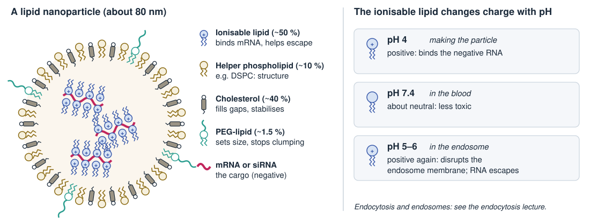
RNA is large and negative: it cannot cross a bilayer, and enzymes in blood destroy it. An LNP packs it in lipid.
Patisiran (2018), the first siRNA drug: silences transthyretin mRNA in the liver (hereditary amyloidosis). The mRNA COVID-19 vaccines use the same four-lipid design.
Only a few per cent of the RNA escapes the endosome: how LNPs get in and out is in the endocytosis lecture.
Why it matters: liposomal doxorubicin (Doxil)
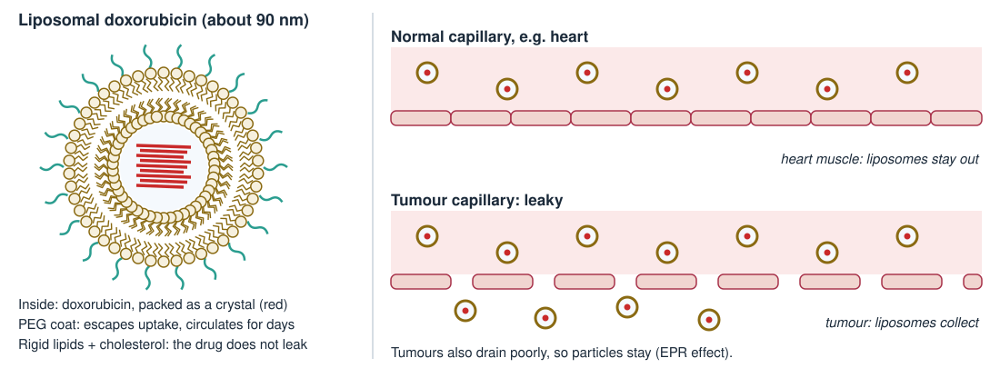
Doxorubicin blocks topoisomerase II and kills dividing cells, but damages the heart (dose-limiting).
In a rigid, PEG-coated liposome (approved 1995), it circulates for days. Tumour vessels are leaky (EPR effect), heart capillaries are tight: less heart damage, new side effect in the skin (hand–foot syndrome).
Caveat: EPR is strong in mouse tumours but varies a lot between human tumours; survival is similar to free drug.
Summary
Membrane lipids self-assemble into a sealed bilayer because of the hydrophobic effect. The plasma membrane mixes glycerophospholipids, sphingolipids and cholesterol.
The bilayer is a two-dimensional liquid: fast lateral diffusion, rare flip-flop. Tail length, double bonds, cholesterol and temperature set its fluidity.
The two leaflets differ (asymmetry): flippases keep PS inside; scramblases expose it as an “eat me” or “clot here” signal.
Proteins are integral (α-helices or β-barrels; predicted from hydropathy plots; extracted with detergents), lipid-anchored or peripheral. FRAP, cell fusion and freeze-fracture EM show a fluid mosaic with domains and fences.
Drug carriers use the same rules: lipid nanoparticles for RNA, PEG-liposomes for doxorubicin.
Read more (optional): Alberts et al., Molecular Biology of the Cell, 7th ed., ch. 10.